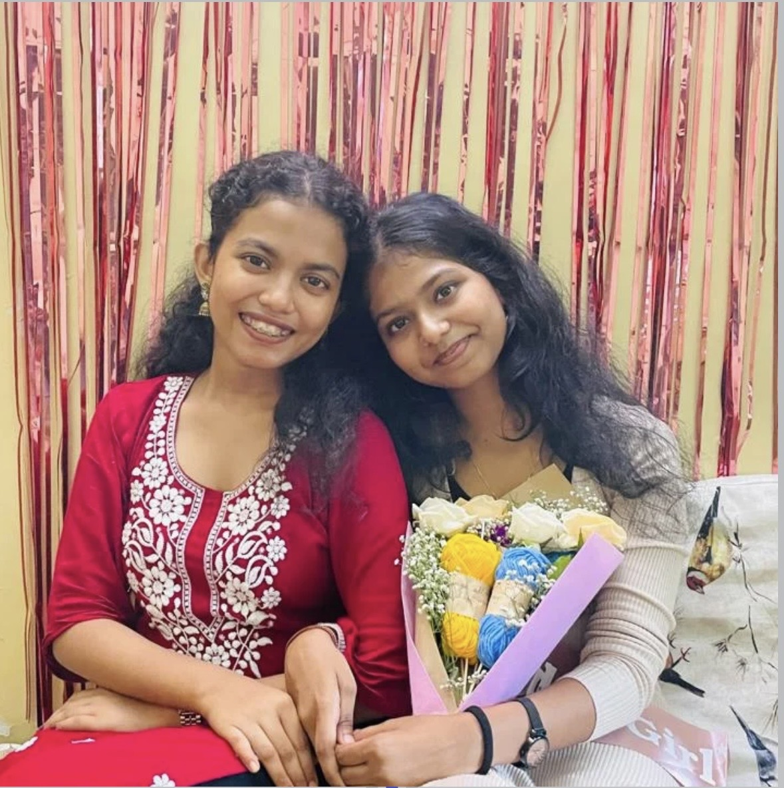

Partners In Threads was founded by Aditi Kudtarkar and Purva Khanolkar, two college students who share a genuine love for crocheting and creating handmade products.
What started as a simple hobby and a mutual interest in crochet inspired us to take a step further and turn our creativity into a small freelancing business. Previously known as Handcrafted Bliss, our journey has now grown into Partners In Threads — a space where creativity, friendship and handmade art come together.
Purva is currently pursuing Computer Science, while Aditi is studying Physiotherapy. Although we come from different fields, our shared passion for crocheting brought us together and encouraged us to build something of our own.
Every product we create is made with patience, creativity and love, with the hope of bringing a little happiness to the person who receives it.
Warm regards,
Aditi & Purva
Every creation is crafted stitch by stitch.
Gifts designed to hold emotions and memories.
No two handmade creations feel exactly alike.